| Home / Dive Resorts / Live-Aboards / Snorkeling / Who We Are / Book a Trip |
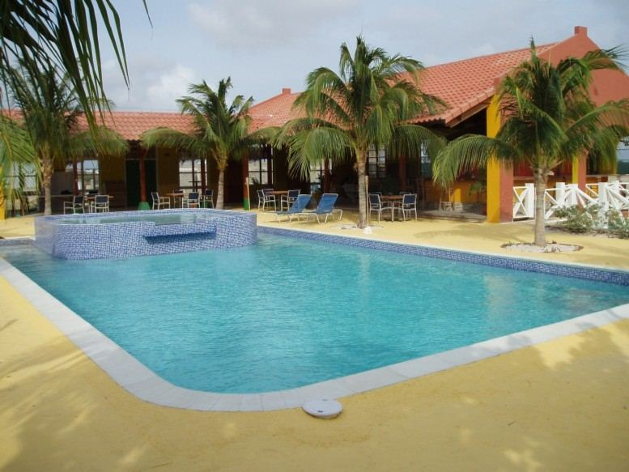
The newly renovated swimming pool at SAND DOLLAR CONDOMINIUM RESORT - BONAIRE.
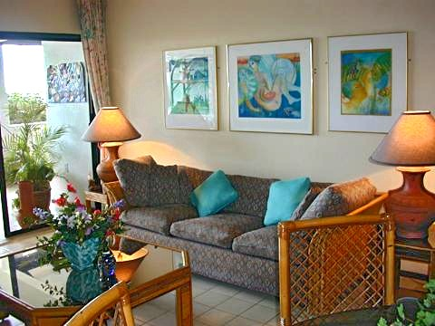
Typical deluxe unit at SAND DOLLAR CONDOMINIUM RESORT.
© Copyright U.S. Dive Travel Network.
BEAUTIFUL BONAIRE:
NETHERLANDS ANTILLES
SAND DOLLAR CONDOMINIUM RESORT --
Perfect locale for Caribbean snorkeling vacations +
delightfully colorful, easy shore diving access.
Prime Bonaire scuba diving + Bonaire snorkeling!
PLEASE CALL US for "SUDDEN SEASONAL SPECIALS" at SAND DOLLAR RESORT.
Periodically hotel managers alert us to new specials, so call our vacation planners at
952-953-4124.
We at U.S. DIVE TRAVEL pledge to price-protect your resort package, all seasons, all groups, always.
If you book 9 people the 10th client stays and dives for free!
If you are all divers, they get a diver's package.
If you are all snorkelers, you get a non-diver comp.
If you are mixed divers + non-divers, you get a non-diver package.
Book 14 divers & the 15th + 16th stay and dive for free!
All resort pricing & comps subject to possible seasonal changes.
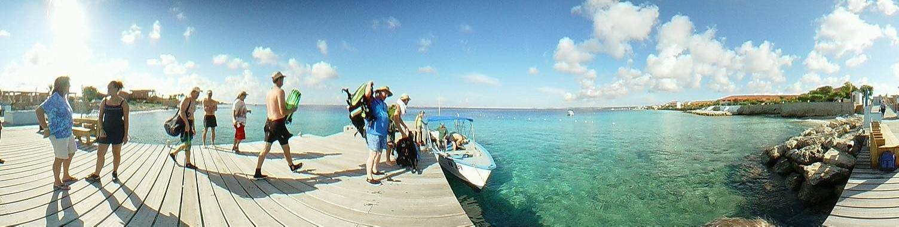
Panoramic view of the friendly Bonaire diving docks at SAND DOLLAR CONDOMINIUM RESORT - BONAIRE.
This beautiful property caters with equal TLC to Caribbean snorkeling enthusiasts + folks who love shore-diving.
Fun tip: grab the scroll bar below with your mouse+cursor & nudge it to the right for an amazing 220-degree view!
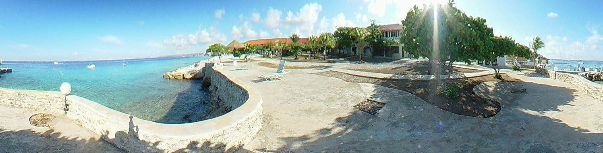
Another sweeping wide-angle view of the jetties at SAND DOLLAR CONDOMINIUM RESORT - BONAIRE.
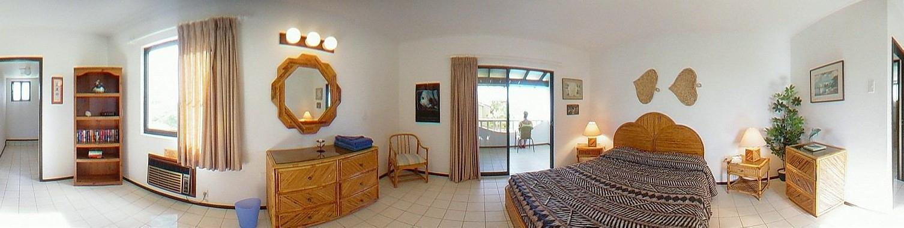
Panoramic view of a 1-bedroom condo unit, with ocean view, at SAND DOLLAR CONDOMINIUM RESORT - BONAIRE.
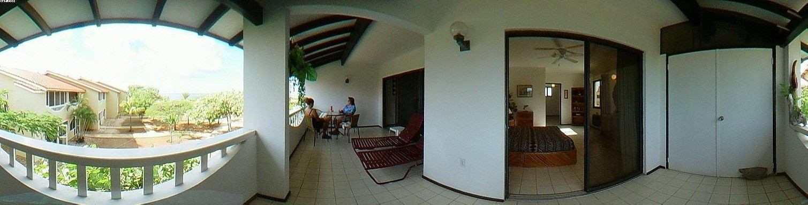
Wide-angle look at a luxurious top-floor ocean-view condo at SAND DOLLAR CONDOMINIUM RESORT - BONAIRE.
Bonaire should be renamed "Bon-shore." That's because this lovely little
Caribbean diving island offers some of the easiest & most relaxing shore diving + snorkeling in the entire Caribbean region. Just a few feet from shore,
for many miles up & down the southern coast, the shore diving & snorkeling is easy, safe & fun -- plus rich with critters & corals, &
blessed with forgiving currents for new divers.
One fun thing: some of our family groups & dive clubs like to rent pickup trucks through Sand Dollar Resort, then they meander up the coastal road a few miles from the resort areas, where the classic shore diving sites begin. From the roadside, they walk their tanks down to the better shore diving locales. Now HERE the Bonaire scuba diving can be pretty amazing, untouched, off the tourist path. To really experience the best of Bonaire's shore diving, we recommend you consider driving 2-4 persons in an extended cab pickup, tooling up the shoreline to the remote countryside coves, as that's where some superb reefs are located. Talk about diving freedom!
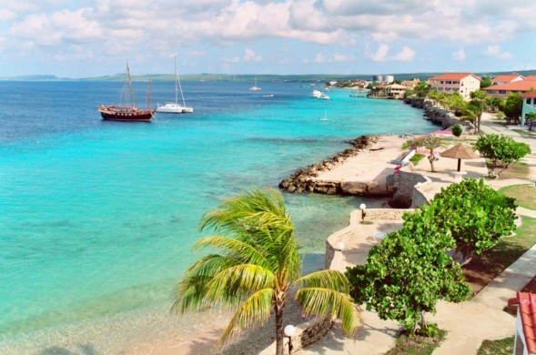
Sunny morning view at SAND DOLLAR CONDOMINIUM RESORT - BONAIRE.
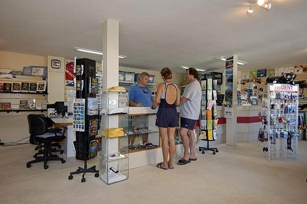
Beautiful new dive shop at SAND DOLLAR RESORT - BONAIRE.
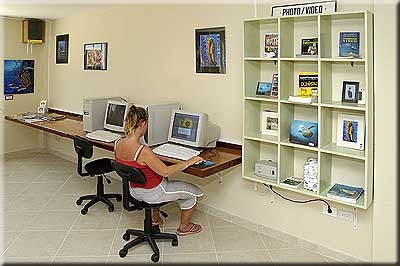
Edit digi-pix easily at SAND DOLLAR RESORT..
Sand Dollar is a dedicated haven for marine photography buffs -- both scuba divers & snorkelers. The prime claim to fame for Sand Dollar Condominium Resort is that it's located on a beautiful tract of land where beaches are only 50 yards from the edge of a vast diving wall that stretches for miles along southern Bonaire's protected shoreline. The South Bonaire water is warm, the currents usually tame, & the visibility often hits 80-100 feet, making Bonaire one of the world's most popular destinations for scuba divers & skin divers who want easy, safe access to awesome shore diving. Here at Sand Dollar Condominiums you can go back again & again, day after day, with zero charge for your shore dives! Utter convenience is the byword here with Bonaire diving. In the greater spectrum of Caribbean diving options, we are certain that Bonaire diving offers some of the best shore diving in the Caribbean, with only a few islands as near-peers.
Even the daily boat dive is only a quick 15-minute jaunt from your dock at Sand Dollar Resort to splendid coral & fish sanctuaries, including such famous sites as "Rappel," "Forest," & "Yellowman Reef." These are popular Bonaire diving classics, that Sand Dollar Condos dive guides know well. The Sand Dollar Condos diving vessel leaves as many as five times daily for one-tank scuba diving trips, so you have unlimited flexibility for planning your daily diving schedule. No hassles here, mon! Bonaire diving, Sand Dollar diving; they are safe, easy & exciting.
One of the famed "ABC Islands," Bonaire is located a short distance north of Venezuela's northwestern coast, near Aruba & Curacao islands, all settled by Dutch merchant seafarers. The combination of Bonaire's strict ban on spearfishing & the carefully preserved National Marine Park that envelopes most of these magnificent shore dives, has created a clean, pure place to enjoy marine wonders like they were decades ago. Bonaire diving professionals are caring for their legacy. This is an island that coddles its natural resources, & its condo guests as well! The best shore diving aside, this island of Bonaire seems created to give relaxation & satisfaction.
It seldom rains in Bonaire, so soil runoff is not a problem here, which means the diving "viz" is most often extraordinary. It's just so safe & easy here, you'll be in scuba diving nirvana on Bonaire.
For camera buffs, Sand Dollar Resort features a wide array of high-tech underwater video & photo gear for rent, plus professional instruction to enhance your skills affordably. (Call us for details -- U.S. Dive Travel: 952-953-4124.) You can often get your digital images processed the same day you take them, assisted by in-shop experts who'll treat you right. This is a great way to learn by constant re-appraisal of shots.
The meal plans at Sand Dollar help couples & families beat the high cost of eating out in town, where you'd otherwise drop $85 - 100 a day per person for three squares. However, at the resort's nicely-managed eatery, you can get a hearty three-meal-per-day plan for only about $55 - $70 per person plus tax. Sunsets from the seaview restaurant are stunning, night after night. It's a great place to sip a drink & relax with a fine conversation.
For large groups or families, Sand Dollar Condos offer a wide range of accommodations, including condos with one, two or three bedrooms, plus studios, all of which are graced with fully equipped kitchens, A/C in the bedrooms, large living spaces, cable TV & ultra-clean user-friendly decor. You can play tennis day or night on specially lighted courts, & relax beside a wonderful freshwater pool at Sand Dollar Condominium Resort.
For families with children, there's a program called "The Sand Penny Club," which offers special discounts on scuba diving packages (for kids older than 12), plus free snorkeling lessons & other seasonal freebies for the kiddies. Children are always welcome at Sand Dollar Resort, any time & any season. This dive resort is far & away the class act of South Bonaire, & most experienced dive travel pros will second that plaudit. Sand Dollar Resort specials are the way to go.
|
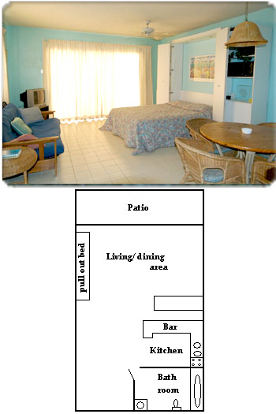 |
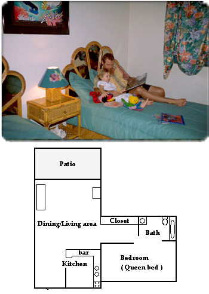 |
|
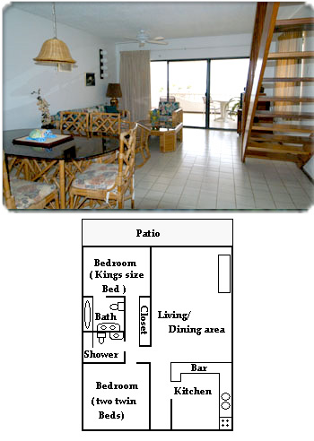 |
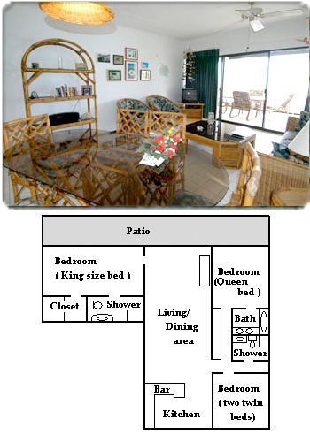 |
ANSWERS to the MOST
FREQUENTLY-ASKED QUESTIONS (FAQs)
about SAND DOLLAR CONDOMINIUM RESORT on BONAIRE
Q: Where is Bonaire island, & precisely where is Sand Dollar Resort located
on Bonaire?
A:� Bonaire is an
island in the Netherlands Antilles. Bonaire, Aruba & Curacao, are often
called the "ABC" islands.
These
islands are off the coast of South America. Bonaire is well known as a diving
& vacation paradise. Come visit
&
stay at Sand Dollar Condominium Resort, located just north of Kralendijk town, on
the water. We are approximately
10
minutes from the airport & downtown shopping.
Q: How many rooms does
Sand Dollar have? Can Sand Dollar accommodate groups?
A: We have 60 separate condos from studio to three
bedroom units. Groups, large & small, can easily be accommodated
�in a variety of
units.� Just call John or Susan at USDT�s
vacation-planning hotline � 952-953-4124.
Q: What is the weather
like on Bonaire?
A: Dry, temperate climate with an average temperature
of 83F/29C year round.� Except in
extremely rare cases,
Bonaire
island is located far south & west of the normal
summer hurricane belt, making it one of the safest summer
�vacation bets in the
Caribbean.
Q: What kind of clothes
do I need?
A: Casual resort attire is appropriate. No wet clothing
in restaurants & no beach wear downtown please, so as to not
scandalize the good local folks.
Q: What languages are
spoken on Bonaire? Will I be able to get by in English?
A: Although Dutch & Papiamento are the official
languages of Bonaire; both English & Spanish are widely spoken.
Q: What credit cards
does Sand Dollar accept?
A: Visa/MasterCard, American Express, Discover & Diners
are accepted at Sand Dollar. Visa/MasterCard are the
most
widely accepted cards on the island.
Q: Do I have an ocean
view from my room?
A: All Sand Dollar apartments front on the Caribbean
Sea & have ocean views.� Depending on
the location of your
�apartment, you could
also have a view of the sunset or a view of Klein Bonaire. There are sun decks
at the water's
�edge with lounge
chairs for comfortable sunning or sunset viewing.
Q. How far is it to the
dive shop?
A: Bonaire Dive & Adventure is located on the south
end of the property, just a stroll away from any of the condominiums.
For
your convenience, you can store your gear at the dive shop.
Q. If I get hungry
& don't want to go far to eat, where can I go?
A: Eddy's Restaurant serves breakfast & lunch on
property seven days a week, & will be opening for dinner in the fall of
2009.
The Reef Restaurant at Den Laman is located adjacent to Bonaire Dive &
Adventure, & it is open for dinner only.
In
addition, there are at least 3 other restaurants within a five-minute walk of
Sand Dollar. Consult the Bonaire Dining Guide
in your condominium for suggestions on where to eat.
Q: Whom do I talk to if
I want to shore dive?
A: Bonaire Dive & Adventure will give you all the
necessary information you need to shore dive.�
Bari Reef directly in from
of the property has the distinction of being rated the #1 reef in the
Caribbean - so we know you will want to make several
dives there. But for shore diving the 50+ sites off
property, you will need transportation to the dive sites. We'll be happy to
help you arrange for the rental of a double cabin pick up truck or other
vehicles from local car rentals.
Q: We are snorkelers. �Is there good snorkeling at Sand Dollar?
A: You bet, the snorkeling is
superb off Bonaire, especially at Sand Dollar�s shoreline.� Access to snorkeling at Sand Dollar
�is easy from three
locations on the property. There is an abundance of species including Blue
Tangs, Parrotfish, Mahogany
Snappers,
butterfly fish, many kinds of Damselfish, Puddingwife, grunts, Chromis (blue
& brown), Sergeant Majors, Creole
fish, & a school of 200+ Horse-eye Jacks right in front of the
condominium. Bonaire Dive & Adventure offers guided snorkeling
�trips, dive with a
naturalist & guided birding & nature tours.
Q: I hear Bonaire has
wonderful wind surfing. How far is the wind surfing from Sand Dollar?
A:
You will need to rent a car & drive to the southern part of the island
where there is a large windsurfing facility at Lac Bay.
This
is approximately a 15-minute drive.
Q: Does Sand Dollar
offer baby-sitting services? What is offered for Kids & Families?
A:
With 48 hours advanced notice, the� Sand Penny is offered free of
charge� to keep your children ages 3-6
excited about
being on Bonaire through craft workshops, while you are enjoying diving or
other activities. The Sand Penny Club runs
Monday
to Friday from 8:15 am through noon & 1:00 pm through 4:30 pm. except on
Holidays. Babysitting can generally be
arranged by the office with outside sitters with at least 48 hour
notice for $8.00 an hour during the day & $10.00 an hour
evenings 12:00 midnight - 8:00 a.m. For more information, visit the
Kids & Families page on our site.
Q: Are there activities
for my teen?
A:
Jong Bonaire is a non-profit after school youth center for the teens on this
Caribbean island. They come to the center for
sports & games, to work on computers & do their homework.
The teen center is operated by a non-profit foundation
established in Bonaire in 1959. www.jongbonaire.org
Q: Do I have to bring
kitchen supplies with me?
A:
No. The rooms are fully equipped with kitchen supplies (pots, pans, utensils,
dishes). Blenders, dishwashers & dish soap,
coffee makers, toasters & microwaves are supplied in each
unit.
Q. If there are no
phones in the rooms, where do I go to make a call?
A:
Local calls can be made from free from the phones both inside & outside the
Front Office.� The front office also
sells
Phone
cards for 10 Nafl or 25 Nafl (guilders) which enable you to place International
calls for as low as .40 Nafl (US $ 0.30)
per minute from any phone. Cell phones are now available as well at the
Front Office, with phone usage cards available for
purchase.� There is also a
telephone located just outside the Sand Dollars Front Office available 24 hours
using credit cards,
calling cards or collect calling.
Q. Where can I get
Internet access?
A:
Sand Dollar does not offer Internet access, however wireless internet is
available with your laptop 24 hours a day at
Chat 'n' Browse, located in the Sand Dollar Mini-Mall next
to Lover's Ice Cream.� You can also access the internet
via
computers inside the center, which is open Monday through Friday from
8:30 AM until 8:00 PM, & Saturday, Sunday & all
holidays from 8:30 AM until 6:00 PM. Rates for use on your laptop of
theirs is $3.00 for 15 minutes, $5.00 for 30 minutes,
or $8.00 for one hour.
Q: Is there someplace
safe where I can keep my valuables?
A:
Every room at Sand Dollar has a� safe large enough to accommodate most
laptops, as well as valuables such as money
& jewelry. There is no charge for this service, but you will need to
put down a deposit for the key.
Q: There are people in
uniform late at night walking around the premises. Who are they?
A:
For your peace of mind, Sand Dollar has private security on duty from 6:00 pm
to 7:00 am.
Q: Are ATMs available
nearby?
A:
Yes, Maduro Bank is located on the property & their ATM is available 24
hours a day. You can withdraw money in dollars
or florins. US dollars are widely accepted.
Q: Where can I find a
grocery store?
A:
Sand Dollar Grocery, a convenience store, is located in the shopping center
next to the bank. A larger supermarket, Cultimara,
is located downtown, & a second called Warehouse Bonaire close to town
on the road to the airport. There are also a number of
�other smaller grocery
stores available. The resort staff will be happy to provide directions when you
arrive.
Q: How does Sand Dollar
handle my email & personal information?
A:
We respect your privacy, & will manage your information with the utmost
care & concern for our customers. Our complete
privacy policy can be read here, but we value our clients, & potential
clients, & vigorously protect private information.
Q: Where can I buy
liquor & beer near the resort?
A:
There is an excellent wine & liquor store almost directly across the street
from Sand Dollar at the newly opened Bonairemart.�
There
is also an Amstel distributor (beer & liquor) about half a mile away on
Kaya Amsterdam, & most grocert stores also sell
alcohol, Warehouse Bonaire having the best selection.� The resort staff will be happy to provide
directions when you arrive.
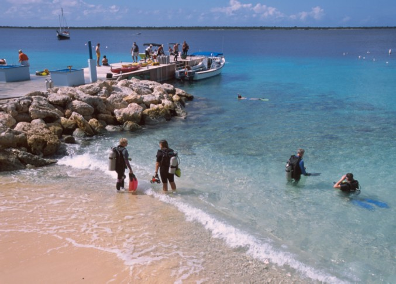
Acres of beautiful, easy shore diving at SAND DOLLAR CONDOMINIUM RESORT - BONAIRE.
BONAIRE VOTED # 1
CARIBBEAN DIVING DESTINATION:
We
have much to celebrate this year, & have many of you to thank, as once
again your voting lead to Bonaire being named the
Top
Rated Overall Dive Destination in the Caribbean/Atlantic, according to the
Scuba Diving magazine�s Readers� Choice Awards
for 2007 & 2009.� Making it even
more exciting is the fact you have helped us achieve this award an
unprecedented six years in
a row! Bonaire also received the #1 rating in five other
Caribbean/Atlantic categories: Top Shore Diving Destination, Top Destination
for Underwater Photography & Top Destination for Beginners, Top
Destination for Advanced Divers & Top Destination for Marine Life.�
Our
guests contributed to Sand Dollar edging out ALL other Bonaire properties with
the top ranking resort rating of 96.9% reader
satisfaction. Sand Dollar received a special "thumbs up" for
our spacious condos; grocery stocking service & ice cream parlor
(Lover's, located in the Sand Dollar mini mall directly in
front of the resort!) Dive partner Bonaire Dive & Adventure received a
rating
of 96%.� Our
thanks to all of our guests who submitted their opinions to the magazine this
year.�
Bonaire
set the standard in reef conservation more than 25 years ago when it instituted
one of the first permanent mooring systems,
prohibited anchoring of boats, & designated all of Bonaire's
waters down to the 200 foot depth an official marine park.�� Since early
�in the 1990's, the
Bonaire Marine Park has required all visiting divers to purchase a Marine Park
Tag ($25) & to participate in a short
information & orientation session at whichever dive facility they
will be using.� At Bonaire Dive &
Adventure, this program is held at
9:30
am daily.� Divers must do a familiarization
dive on the house reef as part of the orientation process before they can leave
on their
own to shore dive or go out on a dive boat. The primary reason for this
familiarization dive is to recheck buoyancy to avoid any potential
damage to the reef & also to ensure that dive equipment is
functioning properly.� At Bonaire Dive
& Adventure, this orientation is held
daily at 9:30 am.� We encourage all
divers traveling to Bonaire to familiarize themselves with the Marine Park
Regulations prior to their
visit.� With your support, we can all
be treated to reefs that are healthy & teeming with life for many years to
come.
# 1 Rated Shore Diving
Destination:
Several
factors combine to offer Bonaire visitors shore diving opportunities unlike any
found elsewhere in the Caribbean. �One is
�the sheer number of
shore dive sites available. With over 50 marked sites, & any number of
easily accessible unmarked entry
�points to chose from,
divers will run out of vacation time long before they run out of diving
options. �Bonaire's calm west coast
waters make entering the water for your dive safe & easy.
& with a fringing reef no more than a 50 yards/meters off shore, surface
swims are kept to a minimum. Freedom loving divers are sure to enjoy the
unlimited shore diving packages we offer with Bonaire
Dive
& Adventure, which enable you to make as many dives as you wish each day
according to your own safe profiles. The
drive-up air & Nitrox tank station makes for easy loading & unloading
for shore diving off property.� We've even
designed a
special accommodations & dive package called the Ride to the
Reef Dive Package which includes a rental vehicle perfect for
getting you to & from those shore dive sites. So all you have
to do is load up, & off you go!
Shore Diving at Sand Dollar:
In
addition to the drive-up tank fill station, there is a second fill station with
24 hour tank access right on the dive dock, along with
convenient dive lockers & benches for gear set-up. Divers can
enter the water to dive Bari Reef one of three ways - a giant
stride off the pier, by walking down a sturdy ladder, or entering
the water gradually from the small sand beach area adjacent
to the pier.� Gear & camera
rinse tanks & showers are also on the dock.
Boat Diving at Sand
Dollar:
For a
change of pace, divers can let someone else do the driving while they enjoy the
short 10 to 15 minute ride to one of the
sites generally not accessible from shore, such as those on the northern
coastline or those surrounding nearby Klein Bonaire.�
Bonaire
Dive & Adventures experienced, friendly dive staff are ready to lead you on
boat dives three times daily, departing at
9:00, 11:00 & 2:00 pm.�
Follow the guide or explore on your own, the choice is yours.�
�����������������������
# 2 Rated Marine Life
Destination:
In
the most recent Survey Project Statistics generated by REEF (the Reef
Environmental Education Foundation), Bonaire claimed
7 of
the top 10 dive sites surveyed in terms of species richness, with Sand Dollar's
Bari Reef ranking #1 in the entire Caribbean.�
As a
participating REEF Field ID Station, Bonaire Dive & Adventure offers
beginning through advanced fish identification courses,
�organizes survey
dives, & sells related fish watching materials.� It also serves as a distribution point for
fish survey forms, &
actively recruits new fish- enthusiast members!�� You can also undertake the challenge of
becoming a member of the dive shops
�"Century Club" by identifying 100
different species of fish on a single one-tank dive!� �With
over 315 species of fish on house reef �
Bari
Reef -- to choose from, there is no better location to test your fish ID
knowledge.� Secretary blenny's peeking
out of abandoned
worm holes, 3 species of shrimp inhabiting one anemone, sea horses & long
lure frog fish, are considered common sightings
�in our waters.
#1 Beginner Dive
Destination:
What
could be better than learning how to dive in warm clear water under the careful
guidance of our experienced PADI dive
instructors? Add to the near 100 foot visibility a reef that runs
parallel to shore for easy navigation, our minimal to non-existent
currents, & you have an ideal environment in which to learn or
perfect your diving & buoyancy skills.�
With the preponderance
of marine life found between the shallow drop-off area & the first 50
to 60 feet of the reef slope, new divers are afforded plenty
of bottom time in which to develop confidence in their skills & a
level of comfort in their newly entered environment.� Advanced
divers will be inspired by the respect for diving freedom that
pervades Bonaire, while still having the opportunity to continue their
diving education via advanced course with Bonaire Dive &
Adventure's multilingual instructors.�
For all courses - Open Water
�through Assistant
Instructor, advanced PADI specialties, Enriched Air (Nitrox) or even Rebreather
Certification - the staff is
dedicated to making your diving education & diving experiences
memorable.�
#1 Underwater Photography
Destination:
As
an arid island, Bonaire experiences little rainfall, which means waters that
are exceptionally clear of silt, with visibility
averaging over 100 feet (30m), & frequently reaching up to 150
feet (50m).� These conditions also make
Bonaire an ideal
destination for underwater photographers.� Whether you are a seasoned shooter or just
picking up a camera for the first
time, Photo Pro Tim Peters, owner & operator of Fish-Eye Photo, is here
to help you capture images of Bonaire's tiny wonders.�
In
addition to photo & video instruction, Fish-Eye Photo also offers wide
range of photo equipment rentals � including
�Nikonis V & Sea & Sea Digital cameras,
film & camera sales, film processing, a slide viewing facility, & a
keen enthusiasm
for sharing ideas & techniques.� Bonaire
Dive & Adventure's retail shop features dive equipment for rent or sale,
colorful t-shirts
& bathing suits, informative books & unique gifts.�
The retail shop is also the place to sign up for the many outdoor eco-adventure
programs offered such as kayaking, snorkeling, biking, hiking & nature
tours.
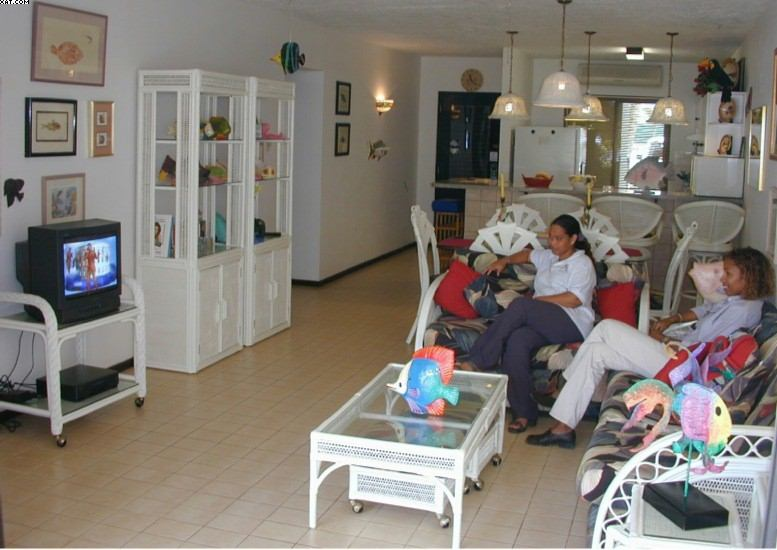
Ladies enjoying local TV inside seaside unit at SAND DOLLAR CONDOMINIUM RESORT- BONAIRE.
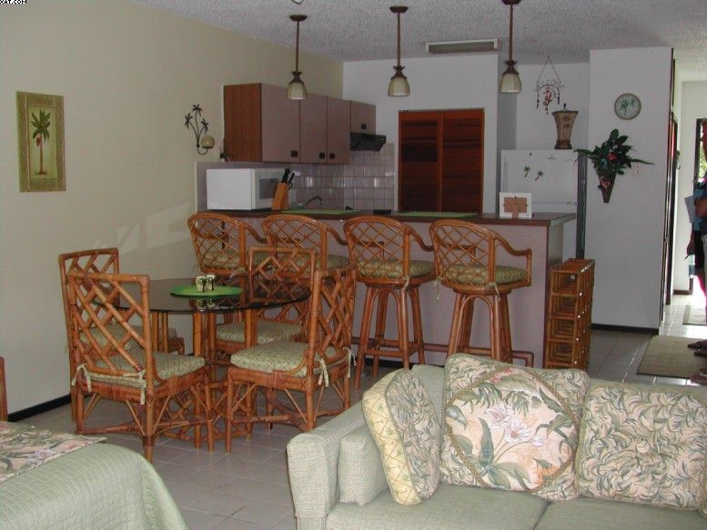
Inside view of typical ocean-view condo at SAND DOLLAR CONDOMINIUM RESORT - BONAIRE.
EXAMPLE of TYPICAL WEEKLY
ACTIVITY SCHEDULE at
SAND DOLLAR CONDOMINIUM
RESORT �
SPORTS & FAMILY FUN,
ECO-TOURS:
Listed
below is a sample of the activities & excursions that are offered to our
guests on a weekly basis. The actual schedule
may vary, & most of the activities can be arranged upon request.
Sign-up for all activities should be done at minimum 24 hours
�in advance. For more
information on any of the activities please contact
info@bonairediveandadventure.com or visit the website
at Bonaire Dive & Adventures.
SUNDAY:�
FREE Guided Snorkel Excursion- 2:30 pm.�
Visit the area in front of the dive center dubbed "The
Aquarium" & see
why it earned this appropriate name.�
Snorkel with one of Bonaire Dive & Adventures Naturalists/Guides as
they help to identify
some of the many species that make Bari Reef the #1 Reef in the Caribbean
for fish diversity.
MONDAY:�
Dive with the Naturalist - 9:00 am.�
Enjoy a slide presentation followed by a guided dive lead by Naturalist
Jerry Ligon
on Bari Reef. Learn techniques in Fish ID & about fish behavior. This
dive is limited to 6 divers. ��Cave
Exploration - 10:00 am.�
Led
by veteran guide Henk Sanders, this 3 hour excursion takes visitors to a dry
cave where fossils of brain corals & other
ancient life forms can be seen. Then journey to a second cave
begins with a descent of more nearly 100 feet & rewards
explorers with a relaxing dip in a fresh water pool.
TUESDAY:�
Mangrove Kayak Tour - 9:00 am.� There
is only one way to access the canopied passages & hidden lakes & bays
of Bonaire's mangroves, & that is via our stable sit-on-top
kayaks.� This plenty of views above &
below water, this is a must do
trip for all nature enthusiasts.
WEDNESDAY: �Inner Island Tour - 9:00 am.� Join expert tour guide Henk on a journey to
six different traditional villages. Visit
abandoned plantation houses & see a side of Bonaire rarely
visited. Next, follow the coastline out to desolate & beautiful
Spelonk, where you'll have time to investigate the
lighthouse, natural blow-hole & cave.� Mountain Bike
Tour 9:00 am.� Combine
the exhilaration of a mountain bike ride with a special nature tour that
enables you to view many of the species of birds &
other creatures that are difficult to observe & impossible to hear when
traveling by auto.
THURSDAY:�
Boat Snorkel Trip - 2:00 pm.� Enjoy
a trip to a snorkel destination on a boat dedicated to finding a choice sits
for
our esteemed snorkelers. (Divers are invited to come along as well.) �See large elk horn formations, as well as
enormous
parrot fish & several different species of eels in the clear,
shallow water. ��Night
Dive on Bari Reef - 6:00 pm.� When
he's
not kayaking, naturalist/guide Mike enjoys nothing more than leading a
guided dive on house reef Bari Reef. Whether it is
your first night dive or your fiftieth, Mike is sure to find something
interesting for all to see.
FRIDAY:�
Birding Tour - 7:30 am.� Led by
Naturalist Jerry Ligon, visit the special places that he has discovered harbor
the most
species that can be observed in an all-morning tour. Checklists are
provided as is Jerry's expertise on Bonaire's flora & fauna.
SATURDAY:�
Mangrove Snorkel - 9:00 am.� You'll
feel like your in a different world altogether when
you snorkel with our guide
in the waters of Cai where upside down jellyfish offer a fascinating
varieties of formations & colors. Just like snowflakes, no
�two jellyfish are
alike!� Sunset Sea
Kayak to Klein Bonaire - 6:00 pm.�
Paddle with Mike & the trade winds & the setting sun to
the white sands of No Name Beach for refreshments on Klein Bonaire.
Afterwards, explore the coastline before returning under
�the stars & distant
harbor lights of Kralendijk.
******************************************************************************
Airlift to Bonaire Gets New
Boosts from Atlanta & New York:
Delta
Airlines offers their weekly non-stop flights from Atlanta to Bonaire & return.
Flight #371 departs Hartsfield-Jackson
Atlanta
International Airport at 10:00 AM, & arrives at
Bonaire�s Flamingo Airport at 3:20 PM. The return flight #370 departs
Bonaire
at 4:15 PM & arrives in Atlanta at 7:45 PM.
Additionally,
beginning December 20, 2009, Delta will add a second weekly non-stop flight
from New York's JFK to Bonaire
each Saturday. The originating flight from JFK to Bonaire will depart New
York at 10:30 AM & arrive Bonaire at 4:25 PM. The
return flight will depart Bonaire at 5:15 PM & arrive JFK at
9:05 PM. Delta will use a Boeing 737-800 jet with seat capacity for
160 passengers.
�
KLM
continues to fly direct from Amsterdam to Bonaire several times weekly, while a
host of major US & International
�airlines provide
direct service into either Curacao or Aruba. Getting to Bonaire from our sister
islands is easier than
ever when taking connecting flights on the Dutch Antilles Express or Tiara
Air.
For more airline information please visit
www.infobonaire.com/gettinghere.html
Sand Dollar Grocery
Stocking Service:
If
your flight is arriving late in the evening or you simply don't want to spend
precious vacation time shopping on your first
day, Sand Dollar offers guests a grocery stocking service for your
convenience.� Simply complete the form
& send to the
�Resort & we�ll make sure your cold drinks,
snack & staples are in your apartment when you arrive.� Other options include
Lover's
Ice Cream in the Sand Dollar mini-mall which stays open until 10:00.� New to the neighborhood, located just across
�the street north of
the traffic circle is the new Bonaire Mart. The new store offers include the
island largest selection of
wines & liquors on the island. The store is open Monday through Saturday
9:00 AM to 6:00 PM non-stop.�
About Our Bonaire Beach Condominiums:
All
our Condos are owned by private owners, & rented via the Resort. At Sand
Dollar, every condo faces the ocean.
All
rooms are situated to catch the trade winds & bedrooms are air-conditioned.
The kitchens are equipped with a
full-sized refrigerator, stove, dishwasher, microwave oven, coffee
pot, blender & toaster plus dishes & cookware.
What's Included in the
Condo Units?
All
our Condos have nearly everything you need. �Boasting the most spacious & comfortable
studio, one, two & three bedroom
ocean view condominiums on the island. In addition to full size kitchens,
dining & living areas, & roomy porches or balconies,
�the condos have color
cable televisions, in-room safe, & spacious bathroom(s). All windows & doors
have screens, &
offer parking areas directly in front of the condo!
Property Amenities:
The
Sand Dollar property features a number property amenities
including several access ladders to the ocean, a seaside
grilling area, lighted tennis courts, restaurant & bar,
convenience store, to-die-for ice cream parlor, internet caf�, gift shop
& day spa.
�
Eddy's Restaurant &
the Sand Dollar Pool:
The
Carillo family, Sonja, Eddy Sr. & Eddy Jr. are your new hosts at the
recently renovated Eddy's Restaurant
(previously SunRise Restaurant) located pool side at Sand
Dollar.� A full American Breakfast Buffet
is served daily from
7:30am - 10:00am & for lunch between 11:00am - 2:00pm.�
At present the restaurant is not open for dinner, however a
"snack menu" is available between 3:00pm - 6:00pm & there
are several excellent restaurants available for dining within
a 5 minute walk.� The Bar is open
from 11:00am to 10:00pm continuous with "Happy Hour" from 5:00pm -� to 7:00pm.
����������������������� �
Nubia's Day Spa:
Nubia
Day Spa offers professional massage therapy, facials, reflexology, lymph
drainage, Shiatsu, deep tissue massage
& other body & facial treatments.�
To help heal sore muscles & joints try her soothing mud therapy
treatment, or relax with
a stress-relieving facial to cleanse & revitalize your face & neck.
Lover's Ice Cream:
If
you are a follower of "Bonaire Chat", undoubtedly you already know
that on your very doorstep lays the top island made
ice cream shop on Bonaire!� Be
prepared - shop early to sample your favorite waffle cone, or take your
favorite flavor home
to your freezer. Don't forget to pack elasticized waist pants.� The ice cream is worth each & every calorie!
����������������������� �
Bonaire Chat N'Browse:
Bonaire
Chat N' Browse is the perfect place to stay in touch with loved ones or
business partners using their fast Internet
connection with your own laptop or one of their provided computers.
Office services are also available including sending &
receipt of faxes, downloading digital images, scanning & copies,
& a call & message center.� Chat
N' Browse also doubles
as a fantastic gift shop! They carry a wide selection of gifts & goodies,
books & guides, & artwork, specifically hard to find
artwork from local artists, as well as Indian artwork from the Kuna
Indians of Panama & the Ecuadorian Indians. Or, while
on Bonaire, enjoy an occasional Cuban cigar!� Chat 'n' Browse is open Monday through Friday
from 8:30 AM until 8:00 PM,
&
Saturday, Sunday & all holidays from 8:30 AM until 6:00 PM
*** 24 Hour Drive-Up wireless internet service is also
available for purchase with use of your laptop!
|
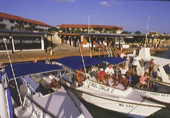 |
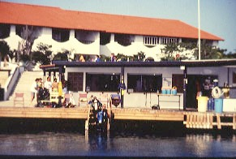 |
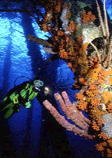
Shallow shore diving off
southern Bonaire island,
just a pebble toss away.
FOR MORE INFORMATION or RESERVATIONS:
Contact: John & Susan Hessburg, Managers
U.S. DIVE TRAVEL Network
PMB 307 / Suite # 116
15050 Cedar Ave. S.
St. Paul, MN, U.S.A. 55124-7047
Voice Mail: 952-953-4124
E-mail: divetrip@bitstream.net
Website: www.usdivetravel
******************************************************
All Bonaire diving package prices listed here are subject to possible change in this steadily evolving travel market. Lodging & diving prices are traditionally stable, while air prices can fluctuate daily. Until air tickets are issued, all airlines reserve the right to change airfares without notice -- an industry standard. We at U.S. Dive Travel will price-protect you to the utmost of our professional ability; & that has been our pledge for one decade now. Our tropical vacation experts normally secure wholesale discount air tickets for our clients who book early enough to secure limited seats in the best price categories. Remember please, the federal government has deregulated airlines, so only they control their pricing -- not any travel professionals.
Unless specifically noted, these above scuba diving packages are prices for only the land-based portion of the dive resorts, in most cases reflecting double-occupancy rooms. At many dive resorts, there will be no triple-occupancy rooms offered. Some exceptions will be noted. International & commuter "island-hopper" airfares are always extra above these land costs. Nominal service fees are also extra for air tickets & the vessel + side tour components. The baseline tariffs for all clients start at $55 per person for the land portion + $35 pp for the air tickets. Late-booking clients on these Bonaire diving tours may receive slightly higher tariffs on the lodging + diving at many of our dive resorts. Solo clients with our Bonaire diving packages will always pay a single supplement to secure a private room for themselves.
The preferred payment mode for all dive resorts & side tours is by cashier's check or wire transfer in U.S. dollars. All clients living outside the USA or Canada will need to pay for their dive vacations via direct wire transfer in U.S. dollars. No personal checks will be accepted for the land portion of any reservation. Thank you for your gracious understanding. Our service level is the highest & our prices the lowest in this industry, & thus we need to preserve a reasonable margin. For published-fare air ticket bookings, USDT always accepts Visa & Mastercard.
Remember, all Bonaire diving vacation clients to all foreign destinations will be asked by local officials overseas, upon departing the airport on your final day, to pay a nominal government departure tax, usually between USD $35 - $45 per client. USDT cannot collect this tax beforehand, so you simply pay it down there, in your host country. Be sure to stash away a little cash for this final moment at the airport, so you'll get your exit visa stamped quickly with no fuss; & away you go. Best of luck with your dive travel plans. We hope your Bonaire scuba diving vacation is a safe & satisfying adventure. Blessings & best wishes with ALL your Bonaire diving vacations.
Best fishes too!
>////*> <*\\\\<
John Hessburg, General Manager
Susan Hessburg, Operations Manager
Founding Partners of the U.S. Dive Travel Network.
| Home / Dive Resorts / Live-Aboards / Snorkeling / Who We Are / Book a Trip |
© Copyright U.S. Dive Travel Network.